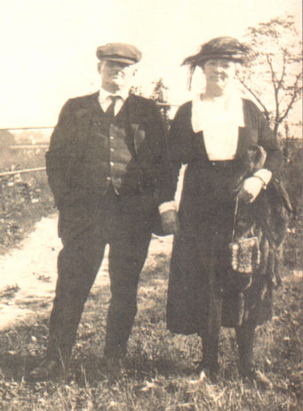

Margaret was born in Ireland and immigrated to the United States. She made a home in Syracuse, NY, where she met fellow Irish immigrant Perry Phalen, whom she wed. Together they had six children.

Perry and Maggie Phalen
Parents:
UNKNOWN
Offspring:
Mary Phalen ???? - ?
Anne Phalen ???? - ?
Mae Phalen ???? - ? Kathryn France Phalen 1901 - 1991
Frances Phalen ???? - ?
Donald Phalen ???? - ?